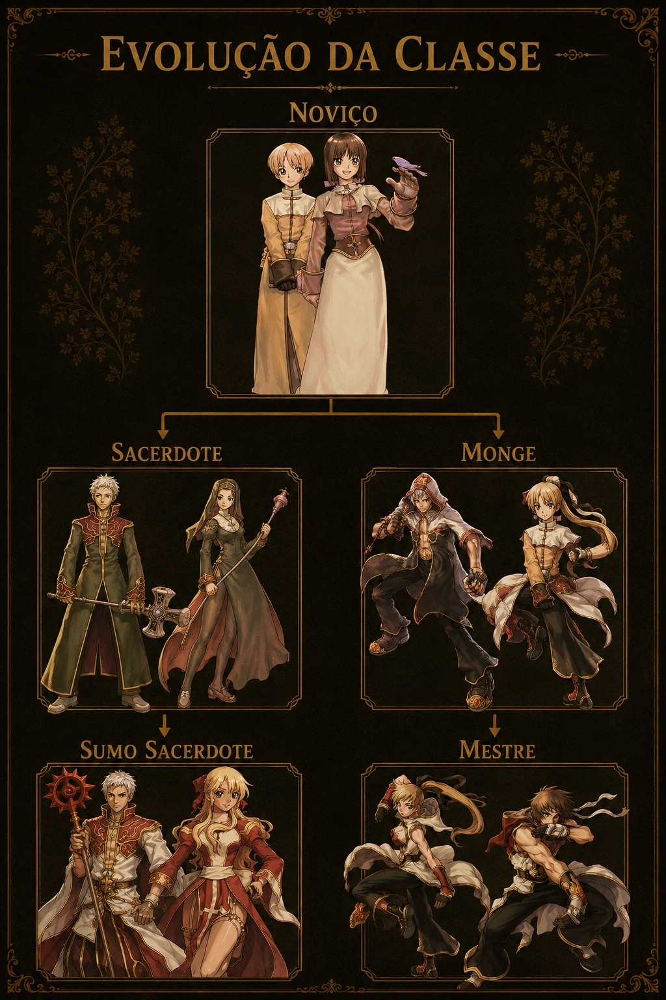
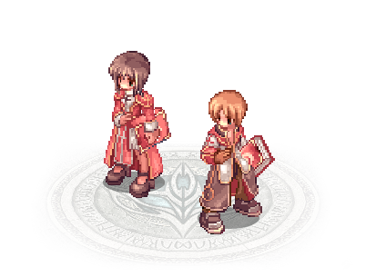

Sobre a Classe
Noviços são abençoados com poderes de cura e suporte, fortalecendo a si mesmos e seus companheiros de batalha através de habilidades sagradas. Dedicados a ajudar os necessitados, utilizam sua fé para proteger aliados e enfrentar as forças do mal. Apesar do foco em suporte, também podem lutar quando necessário, contribuindo para tornar Rune-Midgard um lugar mais seguro contra monstros e ameaças sombrias.
Função no Jogo
O Noviço é focado em suporte e recuperação, auxiliando aliados através de curas e buffs. É indicado para jogadores que gostam de ajudar o grupo e fortalecer seus companheiros.
Características
- Habilidades de cura
- Suporte para aliados
- Bênçãos e buffs
- Boa utilidade em grupo
- Alta regeneração espiritual
